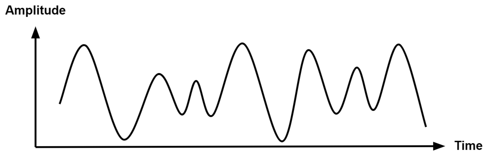
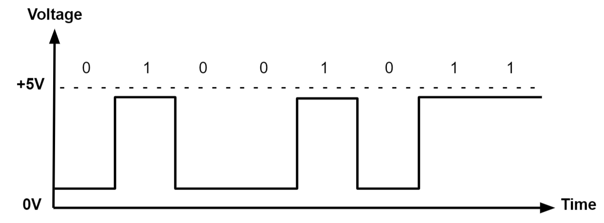

Fade and Intro to PWM
Intro
Locate the official Arduino Documentation for a more complete reference:

Locate the example.
Go to:
File > Examples > 01.Basics > Fade
The Idea
The Fade example is one of the most basic examples intended to teach
you how to use analogWrite(). Before we used digital output
(digitalWrite()), to power an LED with either 3V or 0V.
With analog output, we can power things with anything in between 0V and
3V. So instead of just turning an LED fully on or fully off (2 possible
states), we will be able to change the brightness with 256 possible
values (8-bit resolution). This uses something called Pulse
Width Modulation (PWM).
The sketch description says:
This example shows how to fade an LED on pin 9 using the analogWrite() function.
The analogWrite() function uses PWM, so if you want to change the pin you’re using, be sure to use another PWM capable pin. On most Arduino, the PWM pins are identified with a “~” sign, like ~3, ~5, ~6, ~9, ~10 and ~11.
Pulse Width Modulation
According to the documentation:
Pulse Width Modulation, or PWM, is a technique for getting analog results with digital means. Digital control is used to create a square wave, a signal switched between on and off.

A PWM signal is actually square wave that is happening very fast.
With this quick speed, if one full cycle (T) of the square
wave is on half the time (and off half the time), we get a result of
half of the operating voltage (3.3V). The “on time” of the square wave
is called the pulse width. By changing the pulse width
(the amount of time the square wave is on vs off), we can change the
output voltage.
An averaging of voltage is happening.
With a 50% duty cycle:
analogWrite(127)
3.3V * 0.5 = 1.65V
With a 25% duty cycle:
analogWrite(64)
3.3V * 0.25 = 0.825V
With a 75% duty cycle:
analogWrite(191)
3.3V * 0.75 = 2.475V
Remember the difference between analog and digital signals:
A continuous signal.

Represents an analog signal with a sequence of discrete values, typically using binary code (0s and 1s)

Code Breakdown
Declaring our Variables
int led = 9; // the PWM pin the LED is attached to
int brightness = 0; // how bright the LED is
int fadeAmount = 5; // how many points to fade the LED byThe Setup Function
void setup() {
// declare pin 9 to be an output:
pinMode(led, OUTPUT);
}The Loop Function
void loop() {
// set the brightness of pin 9:
analogWrite(led, brightness);
// change the brightness for next time through the loop:
brightness = brightness + fadeAmount;
// reverse the direction of the fading at the ends of the fade:
if (brightness <= 0 || brightness >= 255) {
fadeAmount = -fadeAmount;
}
// wait for 30 milliseconds to see the dimming effect
delay(30);
}Further Material
Video Tutorials
Intro to PWM using an Arduino Uno: